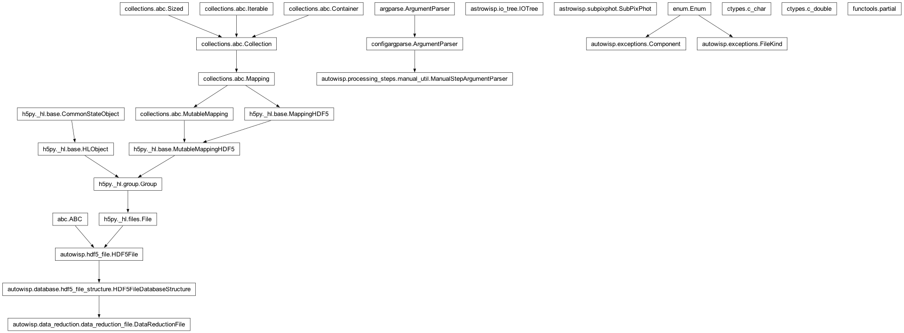

autowisp.processing_steps.measure_aperture_photometry module
Class Inheritance Diagram

Perform aperture photometry on a set of frames in parallel.
- autowisp.processing_steps.measure_aperture_photometry.allowed_interrupted_status_values = (0,)
This step records only “started” before it finishes, so that is the only state an interrupted run can leave behind.
- autowisp.processing_steps.measure_aperture_photometry.cleanup_interrupted(interrupted, configuration)[source]
Remove the aperture photometry from a frame that was interrupted.
- autowisp.processing_steps.measure_aperture_photometry.get_photometer(configuration)[source]
Create an instance of SubPixPhot ready to be applied.
- Parameters:
configuration (dict) – The configuration specifying how to run photometry.
- Returns:
A fully configured instance ready to carry out photometry as specified by the given configuration.
- Return type:
SubPixPhot
- autowisp.processing_steps.measure_aperture_photometry.has_psf_model(image_fname, shapefit_version)[source]
Check if the DR file contains a PSF model.
- autowisp.processing_steps.measure_aperture_photometry.main()[source]
Run the step from the command line.
- autowisp.processing_steps.measure_aperture_photometry.measure_aperture_photometry(image_collection, start_status, configuration, mark_start, mark_end)[source]
Extract aperture photometry from the given images.